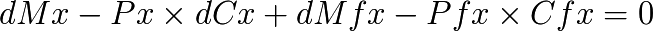
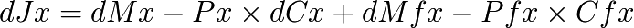

Value field
Fundamental equation of the value field
Under what has been previously established, we have on every point « x » of economic space and to a t » time, a production Cx, associated to a price Px, thus a flow of incoming or outgoing production (positive or negative) Cfx associated to a price Pfx, together with a created money on X dMx and a flow of incoming or outgoing money (positive or negative) dMfx.
In the case where the money represents exactly the produced or exchanged value we have :

As otherwise this equality is not exceptionally executed during immediate exchanges or productions, we called J the field generally nonzero, defined on every point « x » of the economic space-time, by :

dMx represents Universal Dividend, Px × dCx the potential of individual value (the economic innovation of each individual), while that dMfx represents the local flow of the pre-existent monetary supply, and Pfx × Cfx the local flow of exchanges (positive if it increases, negative if it decreases).
The differential value field is dynamic, evolves in time, and measures thus on each point of the economic space, the differential of created money and of created value by the individual « x », added to the part of money and the global circulating value to the « x » point.
The field of it’s integration “J(t)” will show positive bump where money is abundant compared to the local potential worth of the effective production of goods and services. On the other hand, it will show hollow where the local potential worth of production exceed the quantity of money present. This quantity can be negative if there is emission of debt.
Example of field of an economic zone including an area of monetary excess shown by a bump, and a zone where there is a production of value associated with a monetary scarcity represented by a hollow, the rest of the area being balanced.
Economic worth is relative to the observer who is measuring it, (to the actors who are exchanging it), so we should talk about « local potential worth of production » rather than “absolute value” that would be recognized by all the actors of economy. That doesn’t make any sense regarding to the “Relative Theory of Money”.
If these two are are slightly isolated among the economic zone, and produce the same goods and services, there will be high prices in one and low prices in the other, only because of this distribution of money density inside this economic zone.
{kind=link}
Spatial variations of worth field (Luc Fievet RTM 2.0)
NB : Yoland Bresson define the worth field like

where k represent the time standard (the Universal Dividend), M the money supply, P the production and C the economic exchanges. The worth field is then without any dimension. Both definitions are very close, because they are based on the same values, and both taking in account the local and global inside a differential equation. I distinguish, in order to be more precise, the production and the money * *created locally and the one exchanged.
The worth field of money debt
This definition of the worth field help us to picture the evolution of economies based on the money debt system. The banking emitting centre creates some debt money that will, then, diffuse little buy little inside the economic zone till the edges of it.
The initial issue of debt is profitable to a first circle of economic actors such as banks, states (big consumer of money debt), and big enterprises. These actors consume most of this unilateral creation of credit. This sudden and centralised money issue will slowly depreciate the existing money available in the rest of the economic zone at the same time it diffuses into it.
{kind=link}
(Luc Fievet RTM 2.0)
The name “money debt” is not enough to understand the mechanism because the debt issued is indeed never paid back. Only interest are generally paid which secure a perpetual unearned income to the monopolistic issuer.
This monetary system centralized and asymmetric owe its perpetuation to its monopole, and to the grant to more and more debts at a sufficient pace to pay the interests, but only for the first circle. The rest of the economy is being served in money but only in exchange of real production (to which the first issuing circle is abstaining), and thus is subjected to the monetary power.
The field of value of a local exchange trading system « LETS »
LETS are developing during cyclic monetary crisis, because of the lack of money, which blocks the economy and the exchanges far from the emission center of debt-money. Communities having a pseudo-autonomy on generally limited fields of activity, develop then a complementary symmetrical money, liberating them partially from central money.
The LETS are creating most of the time a symmetrical model of mutual credit and do not point to any distortion about money created inside the economic community. Being created on the basis of a complementary money, their trades are not officially booked in official economy, and that is a substantial part of the GDP which escape from the evaluation of the economy, because of the non-density of moneys with asymmetrical issuance.
{kind=link}
The LETS is « flat » initially, its density of monetary creation is spatially balanced. It will not be temporally if it is using a fixed mutual credit created only once at the origin of its axis of economic time (Luc Fievet TRM 2.0)
The field of value of non monetized production
Non monetized production, because of the total lack of central or locale money, appears in the field of value as a trough : (money = 0) - value < 0. It is the case for each production traded, given, produced without merchant exchange, which include most of free softwares, free of rights works, and any voluntary service, which benefits in a substantial part to monetized economy.
One could ask himself why producers are giving their production without any monetary gain. The reason is that some values are especially important as they disseminate fast, widely and freely, enabling the establishment of usages, norms, and recruitment of new producers bringing their modifications to the community.
The value of this type of production is exceed from an immeasurable scaling factor the value of each companies listed in this sector, when we estimate the equivalent development cost it would be needed to produce the same thing. One should simply think that in 2010 all the Internet is running essentially on free layers, in terms of protocols, servers, databases...
Even Science is most often the subject of free of rights discoveries. Scientists inventors are most of the time incitated to publish their discoveries to get peer reviews, and it is a collaborative work in time (scientists from the presents are beneficing past discoveries) but also in space (discoveries being most often the result of a common work). One can ask himself for example what Einstein could have benefits from rights on « intellectual property » on the Theory of Relativity. It would be interesting to estimate, to know what the guy created in « usual » economic terms...
It seems that software producers and free works did not yet bothered to integrate the monetary tool inside their community, which remains a mystery, even if the revelation of the monetary mystery is not easy, it is typically like algorithm and games, domains mastered by this community. Though, it already exists software letting a community establish its money, and its can be deployed fast.

Non-monetized production can totally be huge in terms of value and is arbitrary ignored from an arbitrary center of « debt money » issuance which does only monetized what it knows, denying there the second economic freedom. (Luc Fievet RTM 2.0)
However, to balance with this sad observation, probably temporary, we can remark that big communities created around playful activities like Second Life or even more without any doubt World of Warcraft, have created a powerful monetary approach. Here, the internal money of the persistent world of WoW, is not created properly, but is still accessible via normal actions in the game, they are subject to external transactions, including in official money. This shows indubitably, that as soon as a money is created inside a community, its value is revealed, and not the opposite.
Therefore, because there is no circulating money inside these communities creating free values, the value of these works are not defined Whereas the monetary creation inside a gaming community spontaneously reveals a measurable value. Thus, money is not only a trading tool but a common measure tool too. We can not measure economic value in an area without money. This is a big misunderstanding of this mechanism which leads economic policies on data like the PDB, which does only measure what is monetarily irrigated, creating bubbles effects and resonance, and financing only the past with debt obligations on the future, and never the future on the basis of a Dividend on the past.
The big non-monetized value has as a function to bring big monetary creation forward, which overtakes a lot the sum of old values on which circulate existing money. This is the productive basis of big historical inflationary pushes : the violent creation of debt-money for the purpose of the issuers to take up fraudulently the new value of economic replacement.
The field of value of an Universal Dividend economy
An Universal Dividend economy equalize monetary creation. It does not stop the apparition of tough and bumps, but it makes them possible everywhere, without any central point, and most importantly bringing a money circulation in all the economic area by its structure intrinsically dense, which limits the points and the accumulation duration, as much monetary as productive.
{kind=link}
Field of values fluctuating, without any central point (Luc Fievet RTM 2.0)
In this type of economy there is no central point of monetary issuance, which makes every project, every production, and every autonomous economic circuit directly monetizable everywhere and every time.
In a monetary field of debt-money, far from the issuance center, we will find these type of structures, but at a scale too weak compared to central distortions, which makes it appear as flat (negligible distortion) seen from the center. The problem is that the force of attraction of the false central debt (and real asymmetrical monetary issuance and fraudulent) which provokes unstoppable fights to free itself.
The forces in place
The filed of value has a tendency to oscillate around its equilibrium point. Also a trough will have a tendency to rise until it attracts existing money, and if it is not enough, to provoke money issuance (until it causes the creation of a locale complementary money). In the same way the money will have a tendency to accumulate until it causes the purchase of non-monetary values. Trough and bumps are then two masses attracting each other. This phenomenon can be seen at any measure scale, from the individual to the whole economic area, and the process of filling trough and bumps is unavoidable, regardless of discrete or continuous, fast or slow, peaceful or violent.
In a central system of debt money, centralized accumulation of money or production is done until a break point is reached where the attraction force of the excessive surplus of money compared to the excessive surplus of non-monetized production triggers a brutal movement. Thus in general hyperinflation of prices where production was under-monetized for too much time, which develops with the influx of money freed from the center, or movements of stop of production because of the lack of money or any offset for too much time, which can lead to historical social crisis, revolutions or wars.
The system of monetary creation chosen (or imposed) defines what type of economic development will happen, as well as the space-time form of the field of value : a continuous fluctuation without interruption for a Universal Dividend system, or pyramids of central money with cyclic crushes (monetary bubbles, also called speculative bubbles) for asymmetrical issuance systems.